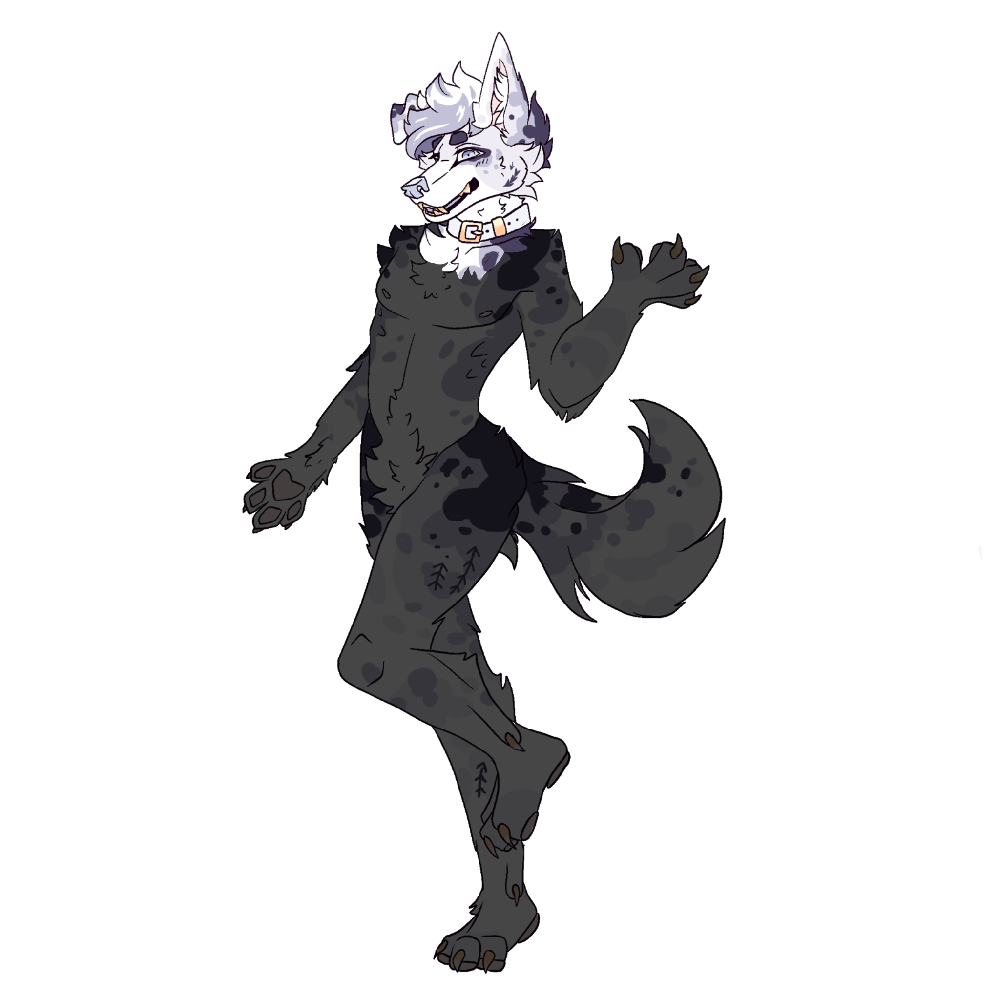
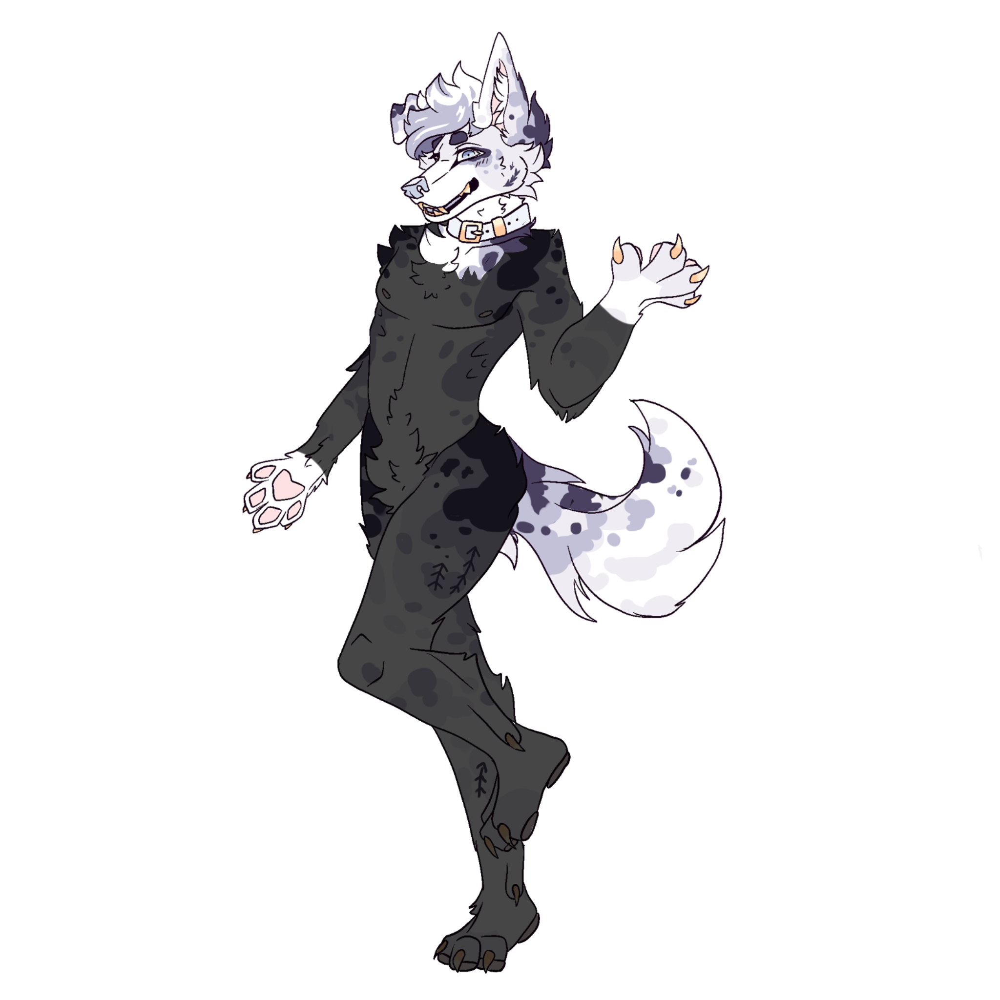
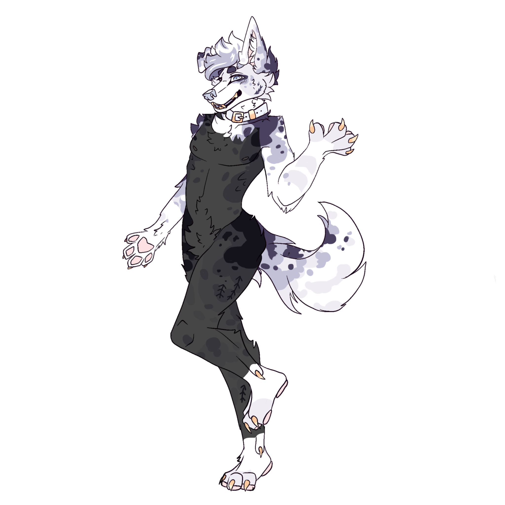
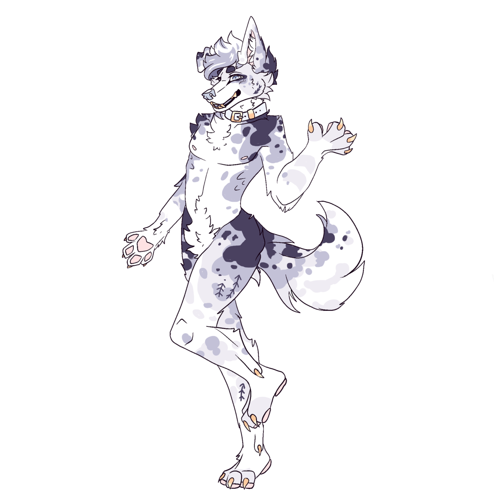
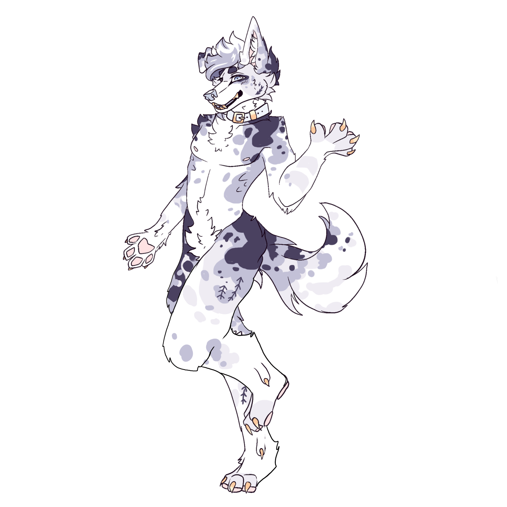

Price Guide
Head Only - $2000+
All heads are fully lined with soft neoprene, have sublimation printed follow-me eyes, soft nose, and plush teeth. Bases are sculpted custom to your character digitally and then printed in PLA before padding features with foam for a cuddly feel. Price increases with complexity, base price is for a design of average complexity. Add-ons such as hair, horns, additional eyes, etc. will vary in price
Mini Partial - $3000+
Paws are built using a Thistlecrux (5 finger) or Kloofsuits (4 finger) pattern, fully lined with same material as the head. Claws are an extra $40. Tail in starting price is a basic, foot and a half long tail. Price can increase based on tail size and complexity.
Full Partial - $4000+
A full partial adds feet paws and arm sleeves. Feet are built onto a shoe in the customer's foot size. The basic shoe included is a slip-on clog, but a brand of choice can be used if paid for and specified by the customer.
Plantigrade Fullsuit - $5000+
A plantigrade bodysuit is one without padding, which lays flat against the human figure. Starting price is for a design of average complexity.
Digitigrade Fullsuit - $5500+
A digitigrade bodysuit is one with padding, to mimic the leg structure of a quadrupedal animal. Starting price is for a design of average complexity.